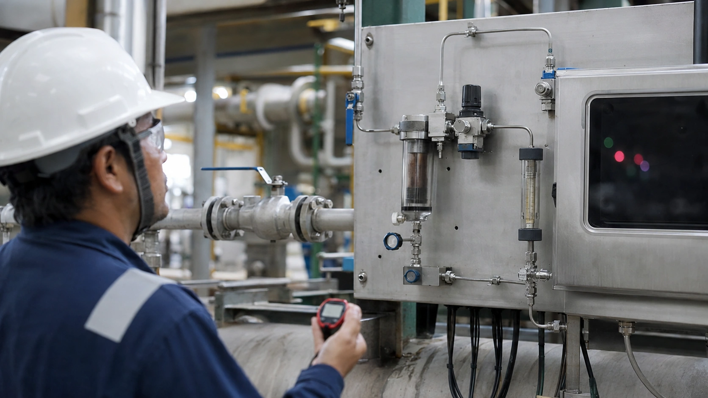

Tempo de amostragem para analisadores online
Conteúdo técnico: ALOGY Engenharia · Atualizado em: 11/09/2026

O valor exibido por um analisador pode representar uma condição que já passou no processo. O atraso total começa na dinâmica entre processo e tomada e continua pelo transporte, condicionamento, renovação da célula, resposta do sensor e filtros digitais.
Componentes do time delay
- Linha de transporte: volume interno dividido pela vazão efetiva.
- Filtros, vasos e condicionadores: acrescentam volume e podem reter ou reagir com o componente medido.
- Célula do analisador: uma troca de volume não significa resposta completa.
- Sensor e processamento: incluem constante de tempo, estabilização, ciclo analítico e filtros digitais.
O valor relevante para controle é o intervalo entre uma mudança real no processo e a indicação utilizável no PLC/DCS.
Exemplo de atraso de transporte
Uma linha com volume interno de 500 mL e vazão real de 250 mL/min tem tempo de transporte ideal de 2 minutos. Se a célula e o condicionamento bem misturados somarem 150 mL, cada renovação acrescenta 0,6 minuto.
Para um volume perfeitamente misturado, uma renovação representa cerca de 63% da mudança final e três renovações, aproximadamente 95%. Nesse modelo simplificado, seriam cerca de 3,8 minutos antes de acrescentar a resposta do sensor e o processamento.
Isso é uma estimativa de primeira triagem; volumes misturados, adsorção e ciclos analíticos exigem avaliação adicional.
Transporte não é o mesmo que resposta
Em uma linha próxima de deslocamento, volume/vazão estima quando a frente da nova amostra chega. Em vasos, filtros e células com mistura, a concentração antiga decai gradualmente. Se o sensor puder ser aproximado por primeira ordem, uma constante de tempo corresponde a cerca de 63,2% da mudança e três constantes, a cerca de 95%.
Cromatógrafos trabalham em ciclos; colorímetros aguardam reação; sensores eletroquímicos dependem de membrana e química; filtros digitais podem adicionar atraso depois da medição física.
Por que aumentar a vazão nem sempre resolve
Maior vazão reduz transporte, mas pode ultrapassar limites do condicionador/analisador, elevar queda de pressão, aumentar descarte e alterar vaporização ou equilíbrio da amostra. Uma arquitetura comum usa fast loop e deriva apenas a vazão necessária para o analyzer.
Preserve a amostra durante o transporte
- Gases: pressão, temperatura e ponto de orvalho compatíveis para evitar condensação/fracionamento.
- Líquidos: pressão suficiente para evitar bolhas e vaporização em restrições.
- Componentes reativos: materiais e residence time compatíveis com adsorção, permeação e reação.
- Linhas aquecidas: confirme temperatura também em válvulas, reguladores, filtros e entrada do abrigo.
Seleção do ponto de amostragem
| Decisão | Verificação | Risco |
|---|---|---|
| Local da tomada | Região representativa, sem estagnação ou separação de fases incompatível. | Amostra de zona morta ou fase errada. |
| Sonda/orientação | Profundidade, direção, velocidade, bloqueio e arraste. | Entupimento ou coleta preferencial. |
| Transporte | Distância, volume, vazão, pressão, temperatura e materiais. | Atraso, condensação, liberação de gás ou adsorção. |
| Fast loop/derivação | Circulação principal rápida e vazão compatível no analyzer. | Forçar vazão excessiva na célula sem eliminar volume morto. |
| Amostra manual | Ponto, horário, purga e condição equivalente. | Comparar locais ou instantes diferentes. |
Exemplo: cloro online versus amostra manual
Se uma amostra é coletada na tomada às 10:00 e o atraso até a célula é 4 minutos, a comparação correspondente aparece no analisador por volta das 10:04. Compará-la com a leitura online das 10:00 pode produzir falso diagnóstico de deriva quando o residual está mudando.
Teste de resposta no sistema instalado
- Registre processo, vazões, pressões e configuração de filtros.
- Defina o ponto de introdução e o critério de resposta, por exemplo 63% ou 95%.
- Introduza uma mudança segura e conhecida conforme procedimento.
- Marque o instante da mudança e o início da resposta no analyzer.
- Registre o tempo até o critério definido e compare com a estimativa.
- Investigue volumes não considerados, válvulas de seleção, purgas e filtros digitais.
Injetar padrão diretamente na entrada do analisador mede principalmente a parcela do equipamento. Introduzir a mudança no início do sample system inclui transporte e condicionamento.
Ferramentas e referências
- Swagelok — measuring time delay in analytical instrumentation systems
- Swagelok — maintaining a representative sample
Aviso de uso
Volume/vazão e modelos de renovação/primeira ordem são estimativas iniciais. Não substituem análise hidráulica/termodinâmica, propriedades da amostra, limites do equipamento, teste instalado ou requisitos de segurança.